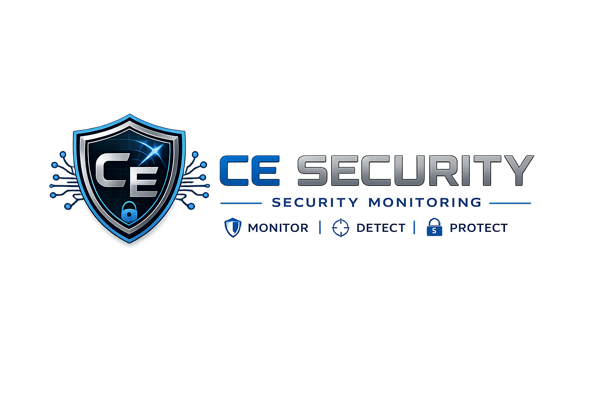

SIEM-01
Active
Wazuh Manager
Central monitoring platform used to collect endpoint events, display alerts, map activity to MITRE ATT&CK, and support SOC-style investigations.

CE Security Monitoring
A self-built cybersecurity lab used to generate realistic security events, monitor endpoints, analyze alerts, document investigations, and practice SOC analyst workflows.
Lab Overview
SIEM Platform
Virtual Machines
Primary Endpoint Focus
Detection Mapping
Architecture
The lab uses VirtualBox networking to separate internet access from the internal host-only lab network. Kali Linux is used as the attacker system, while Ubuntu and vulnerable lab machines generate logs and security events that are monitored by Wazuh.
This design allows safe attack simulation, endpoint monitoring, and alert investigation without exposing vulnerable systems to the public internet.
Internet / NAT
│
▼
VirtualBox Lab Network
│
├── Kali Linux Attacker
│ └── Nmap / Metasploit / Testing
│
├── Ubuntu Target Endpoint
│ └── Wazuh Agent / Auth Logs
│
├── Metasploitable2
│ └── Vulnerable Services
│
└── Wazuh Manager
└── Dashboard / Alerts / Rules
Systems
Central monitoring platform used to collect endpoint events, display alerts, map activity to MITRE ATT&CK, and support SOC-style investigations.
Attacker workstation used to generate realistic events such as SSH failures, reconnaissance activity, exploitation attempts, and traffic for investigation.
Monitored Linux endpoint used for authentication events, account changes, privilege escalation testing, SSH monitoring, and Wazuh alert generation.
Intentionally vulnerable machine used to study attacker behavior, reconnaissance, exploitation paths, and future detection engineering opportunities.
Workflow
Security events are generated from controlled lab activity such as failed SSH logins, privilege escalation testing, account changes, reconnaissance, and vulnerable service exploitation.
Wazuh alerts are reviewed to identify the affected endpoint, source IP, rule level, MITRE tactic, event details, and supporting log evidence.
Findings are documented in professional incident reports containing an executive summary, timeline, indicators of compromise, MITRE mapping, response actions, and lessons learned.
Completed investigations are converted into portfolio case files to demonstrate hands-on SOC skills, technical analysis, and security documentation ability.
Coverage
Roadmap
Add network-based detection to monitor suspicious traffic, exploit attempts, and possible command-and-control behavior.
Add Windows event logs and Sysmon data to investigate PowerShell activity, process creation, persistence, and endpoint compromise indicators.
Build custom Wazuh rules and detection logic for brute force attacks, suspicious commands, privilege escalation, and malware-style behavior.
Create structured threat hunting write-ups based on hypotheses, evidence, log queries, findings, and recommended improvements.